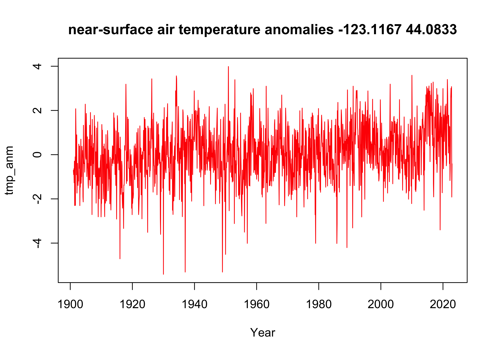
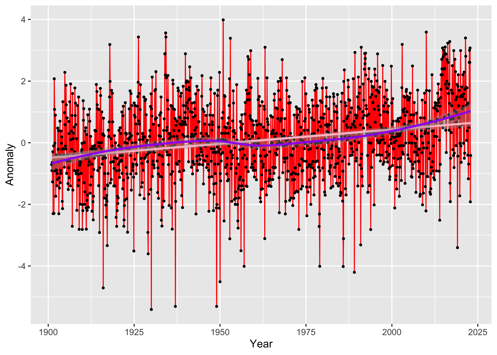
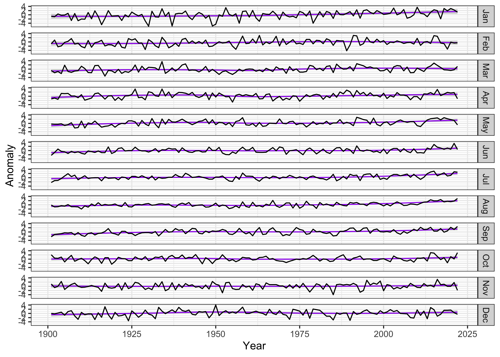
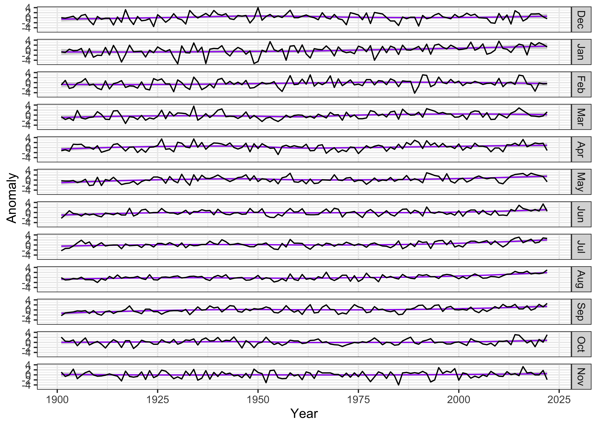
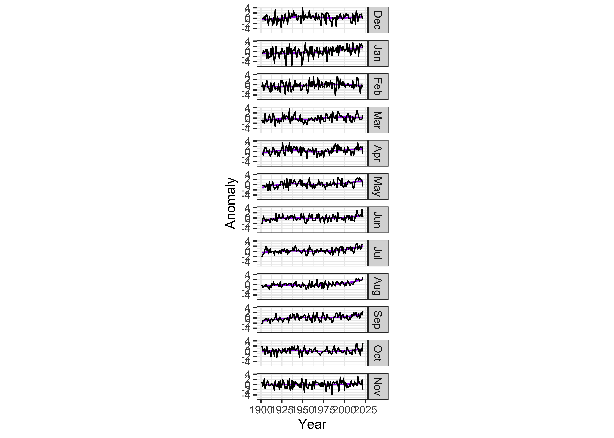
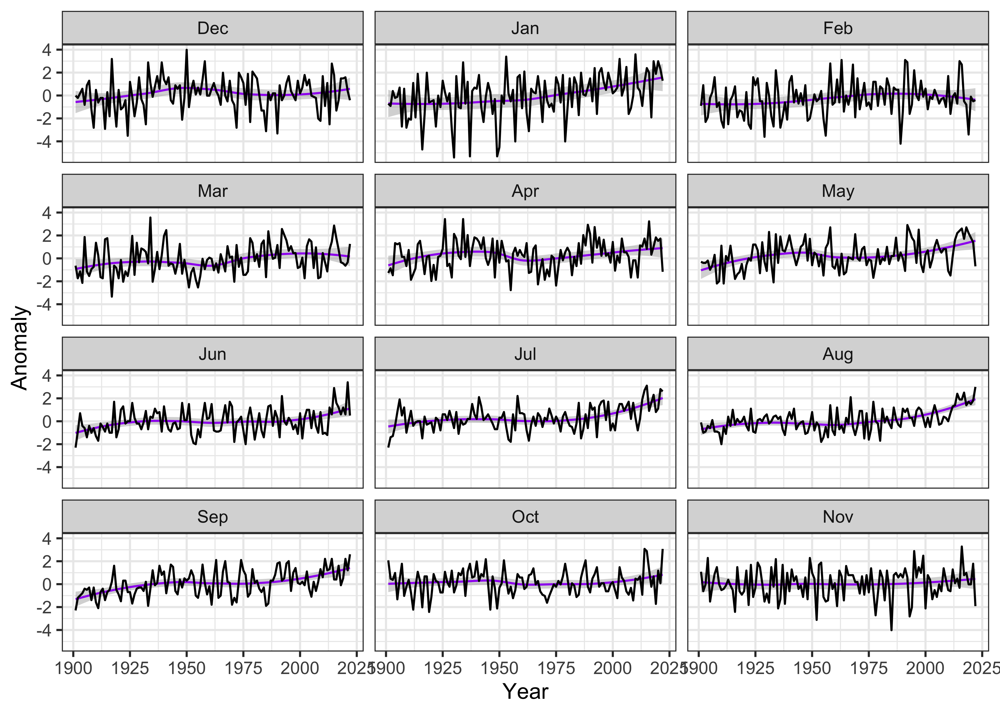

NOTE: This page has been revised for Winter 2024, but may undergo further edits.
A basic way of visualizing data in, for example, a 3-D netCDF file, with time being the third dimension, is to plot time series of individual grid points or areal averages. Here we’ll plot the CRU temperature anomalies for the grid point closest to Eugene, both as a single time series with the monthly values in consecutive order, and in a multi-panel plot, with the data for each month of the year in a differnt panel.
Load the necessary packages, and set paths and filenames:
# set path and filename
ncpath <- "/Users/bartlein/Projects/RESS/data/nc_files/"
ncname <- "cru_ts4.07.1901.2022.tmp.anm.nc"
ncfname <- paste(ncpath, ncname, sep="")
dname <- "tmp_anm" # note: tmp means temperature (not temporary)Open the netCDF file (and list its contents), and read dimension variables:
## File /Users/bartlein/Projects/RESS/data/nc_files/cru_ts4.07.1901.2022.tmp.anm.nc (NC_FORMAT_NETCDF4):
##
## 1 variables (excluding dimension variables):
## float tmp_anm[lon,lat,time] (Contiguous storage)
## units: degrees Celsius
## _FillValue: 9.96920996838687e+36
## long_name: near-surface air temperature anomalies
## base_period: 1961 - 1990
##
## 3 dimensions:
## lon Size:720
## units: degrees_east
## long_name: lon
## axis: X
## lat Size:360
## units: degrees_north
## long_name: lat
## axis: Y
## time Size:1464
## units: days since 1900-1-1
## long_name: time
## axis: T
##
## 6 global attributes:
## title: CRU TS4.07 Mean Temperature
## institution: Data held at British Atmospheric Data Centre, RAL, UK.
## source: Run ID = 2304141047. Data generated from:tmp.2304141039.dtb
## references: Information on the data is available at http://badc.nerc.ac.uk/data/cru/
## history: P.J. Bartlein, Sat Feb 10 17:20:41 2024
## Conventions: CF-1.4Read latitude, longitude, and time:
## [1] -179.75 -179.25 -178.75 -178.25 -177.75 -177.25## [1] -89.75 -89.25 -88.75 -88.25 -87.75 -87.25## [1] 720 360# get time
time <- ncvar_get(ncin,"time")
tunits <- ncatt_get(ncin,"time","units")
nt <- dim(time)
nm <- 12
ny <- nt/nmDecode the time variable (but don’t overwrite anything):
# decode time
cf <- CFtime(tunits$value, calendar = "proleptic_gregorian", time) # convert time to CFtime class
timestamps <- CFtimestamp(cf) # get character-string times
time_cf <- CFparse(cf, timestamps) # parse the string into date components
# list a few values
head(time_cf)## year month day hour minute second tz offset
## 1 1901 1 16 0 0 0 00:00 380
## 2 1901 2 15 0 0 0 00:00 410
## 3 1901 3 16 0 0 0 00:00 439
## 4 1901 4 16 0 0 0 00:00 470
## 5 1901 5 16 0 0 0 00:00 500
## 6 1901 6 16 0 0 0 00:00 531Read the data, and get variable and global attributes:
# get temperature
tmp_array <- ncvar_get(ncin,dname)
dlname <- ncatt_get(ncin,dname,"long_name")
dunits <- ncatt_get(ncin,dname,"units")
fillvalue <- ncatt_get(ncin,dname,"_FillValue")
dim(tmp_array)## [1] 720 360 1464# get global attributes
title <- ncatt_get(ncin,0,"title")
institution <- ncatt_get(ncin,0,"institution")
datasource <- ncatt_get(ncin,0,"source")
references <- ncatt_get(ncin,0,"references")
history <- ncatt_get(ncin,0,"history")
Conventions <- ncatt_get(ncin,0,"Conventions")Close the netCDF data set.
Replace netCDF fill values with R NA’s
# replace netCDF fill values with NA's
tmp_array[tmp_array==fillvalue$value] <- NA
length(na.omit(as.vector(tmp_array[,,1])))## [1] 67420Get the beginning and ending year of the time series:
# get beginning year and ending year, number of years, and set nm)
beg_yr <- time_cf$year[1]
end_yr <- time_cf$year[nt]
print(c(beg_yr, end_yr, nt, ny, nm))## [1] 1901 2022 1464 122 12Generate a decimal year value for plotting consecutive values:
# generate a decimal year ("YrMn") time coordinate
YrMn <- seq(beg_yr, end_yr+1-(1/12), by=(1/12))
head(YrMn); tail(YrMn)## [1] 1901.000 1901.083 1901.167 1901.250 1901.333 1901.417## [1] 2022.500 2022.583 2022.667 2022.750 2022.833 2022.917Generate month names for creating the dataframe that will be used to get multi-panel plots:
# month
month_names <- c("Jan","Feb","Mar","Apr","May","Jun","Jul","Aug","Sep","Oct","Nov","Dec")
month <- rep(month_names, ny)
head(month); tail(month)## [1] "Jan" "Feb" "Mar" "Apr" "May" "Jun"## [1] "Jul" "Aug" "Sep" "Oct" "Nov" "Dec"## [1] "factor"Note that month is a factor, and without intervention,
the monthly panels will plot in the default order for a factor:
alphabetical. This would be a little counterintuitive to interpret, but
the factor order can be reset using the code fragment:
month <- factor(month, levels=month_names), as was done
above.
Now find the grid cell closest to Eugene (approximatly 123.1167 W and
44.08333 N). This is done by using the which.min()
function:
# get indices of the grid cell closest to Eugene
tlon <- -123.1167; tlat <- 44.0833
j <- which.min(abs(lon-tlon))
k <- which.min(abs(lat-tlat))
print(c(j, lon[j], k, lat[k]))## [1] 114.00 -123.25 269.00 44.25The data in the netCDF file are arranged in consecutive order, and so
this is straightforward, using the decimal year value YrMn
as the x-variable. Make a dataframe of the consecutive monthly data;
tmp_anm_df <- data.frame(YrMn, tmp_anm_ts, month)
names(tmp_anm_df) <- c("Year", "Anomaly", "Month")
head(tmp_anm_df)## Year Anomaly Month
## 1 1901.000 -0.7100001 Jan
## 2 1901.083 -0.9033334 Feb
## 3 1901.167 -0.6366668 Mar
## 4 1901.250 -1.2700001 Apr
## 5 1901.333 -0.2933331 May
## 6 1901.417 -2.2999997 JunNow plot the data as a base R plot:
# plot time series of grid point
plot_title <- paste(dlname$value, as.character(tlon), as.character(tlat), sep = " ")
plot(tmp_anm_df$Year, tmp_anm_df$Anomaly, type="l", xlab="Year", ylab=dname, main=plot_title, col="red")
Here’s a more elaborate ggplot2() version, with points
and a straight line (lm) and a smooth curve
(loess) added:
ggplot(tmp_anm_df, aes(x = Year, y = Anomaly)) +
geom_line(color = "red") +
geom_point(size = 0.75) +
geom_smooth(method = "lm", size=1, color="pink") + # straight line
geom_smooth(method = "loess", size=1, color="purple") # loess curve## Warning: Using `size` aesthetic for lines was deprecated in ggplot2 3.4.0.
## ℹ Please use `linewidth` instead.
## This warning is displayed once every 8 hours.
## Call `lifecycle::last_lifecycle_warnings()` to see where this warning was generated.## `geom_smooth()` using formula = 'y ~ x'
## `geom_smooth()` using formula = 'y ~ x'
Although the single-panel plot works fine for showing the overall trend, one question that usually comes up in looking at local, regional, and global tre3nds in temperatrure is whether or not the changes in individual months or seasons are consistent, or whether, say, winter months are warming more than summer. Multi-panel plots can help answering those questions.
Make a second dataframe consisting of nt values of the
temperature time series tmp_ts, and the year
and the month variables generated above:
# make dataframe
tmp_anm_df2 <- data.frame(time_cf$year, month, tmp_anm_ts)
names(tmp_anm_df2) <- c("Year", "Month", "Anomaly")
str(tmp_anm_df2)## 'data.frame': 1464 obs. of 3 variables:
## $ Year : int 1901 1901 1901 1901 1901 1901 1901 1901 1901 1901 ...
## $ Month : Factor w/ 12 levels "Jan","Feb","Mar",..: 1 2 3 4 5 6 7 8 9 10 ...
## $ Anomaly: num -0.71 -0.903 -0.637 -1.27 -0.293 ...## Year Month Anomaly
## 1 1901 Jan -0.7100001
## 2 1901 Feb -0.9033334
## 3 1901 Mar -0.6366668
## 4 1901 Apr -1.2700001
## 5 1901 May -0.2933331
## 6 1901 Jun -2.2999997## Year Month Anomaly
## 1459 2022 Jul 2.6066661
## 1460 2022 Aug 3.0000000
## 1461 2022 Sep 2.6066675
## 1462 2022 Oct 3.0766668
## 1463 2022 Nov -1.9166669
## 1464 2022 Dec -0.4133334Now, construct a ggplot2 multi-panel (e.g. “faceted”)
plot. The plot will be constructed with a lowess-smoother line in the
background, overplotted by the yearly values of each month in a separate
panel.
ggplot(data = tmp_anm_df2, aes(x = Year, y = Anomaly)) +
# geom_smooth(method = "lm", size=2, color="pink") + # straight line
geom_smooth(method = "loess", size=0.5, color="purple") + # loess curve
geom_line() +
facet_grid(tmp_anm_df2$Month ~ .) +
theme_bw()## `geom_smooth()` using formula = 'y ~ x'
The months can be reorganized to put December at the top, by
reorganizing the Month factor:
# reorganize months
tmp_anm_df2$Month <- factor(tmp_anm_df2$Month, levels =
c("Dec", "Jan", "Feb", "Mar", "Apr", "May", "Jun", "Jul", "Aug", "Sep", "Oct", "Nov"))
str(tmp_anm_df2$Month)## Factor w/ 12 levels "Dec","Jan","Feb",..: 2 3 4 5 6 7 8 9 10 11 ...Make the plot:
ggplot(data = tmp_anm_df2, aes(x = Year, y = Anomaly)) +
# geom_smooth(method = "lm", size=2, color="pink") + # straight line
geom_smooth(method = "loess", size=0.5, color="purple") + # loess curve
geom_line() +
facet_grid(tmp_anm_df2$Month ~ .) +
theme_bw()## `geom_smooth()` using formula = 'y ~ x'
The plot seems quite wide relative to the vertical space occupied by
each monthly time series, which makes it difficult to notice any trends
in the data. The aspect ratio of the plot can be adjusted, guided by the
Bill Cleveland’s notion of “banking to 45 (degrees)”. The function
bank_slopes() in the package ggthemes can find
the aspect ratio that optimizes that notion for a single time series
(here, the values for December):
bank_slopes(tmp_anm_df2$Year[tmp_anm_df2$Month == "Dec"], tmp_anm_df2$Anomaly[tmp_anm_df2$Month == "Dec"])## [1] 0.04767961A good first-guess aspect ratio can then be found by multiplying this value by the number of panels. However, experience shows that multiplying by the half the number of panels provides a more pleasing result:
ggplot(data = tmp_anm_df2, aes(x = Year, y = Anomaly)) +
# geom_smooth(method = "lm", size=2, color="pink") +
geom_smooth(method = "loess", size=0.5, color="purple") +
geom_line() +
facet_grid(Month ~ .) +
theme_bw() +
theme(aspect.ratio = (0.04 * (nm/2))) ## `geom_smooth()` using formula = 'y ~ x'
Another approach for comparing months is to use the
ggplot2() facet_wrap() function:
ggplot(data = tmp_anm_df2, aes(x = Year, y = Anomaly)) +
# geom_smooth(method = "lm", size=2, color="pink") +
geom_smooth(method = "loess", size=0.5, color="purple") +
geom_line() +
facet_wrap(tmp_anm_df2$Month ~ ., nrow = 4, ncol = 3) +
theme_bw()## `geom_smooth()` using formula = 'y ~ x'